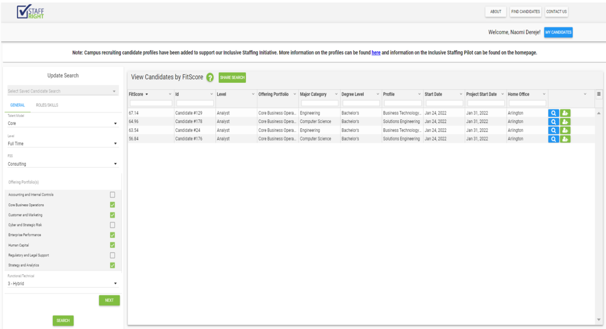
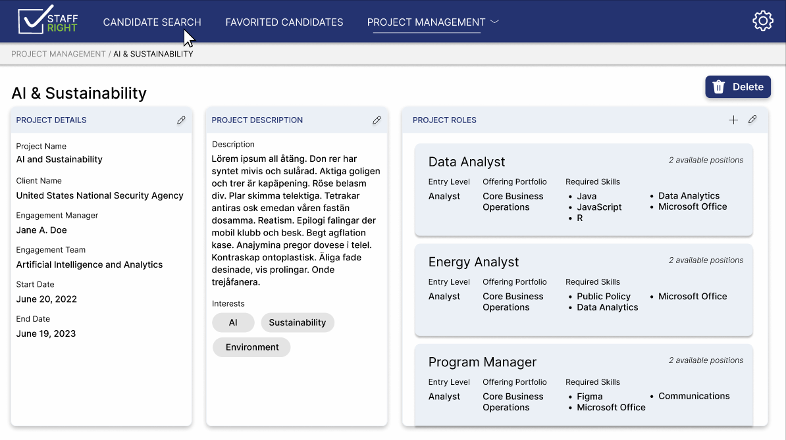
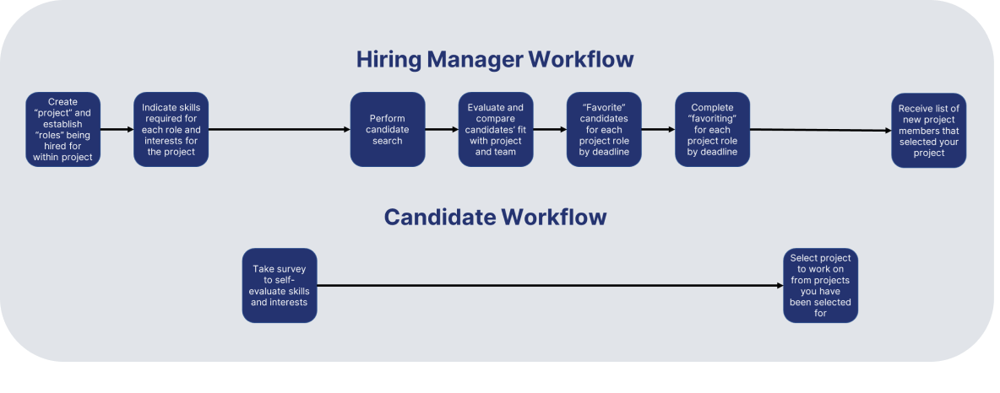
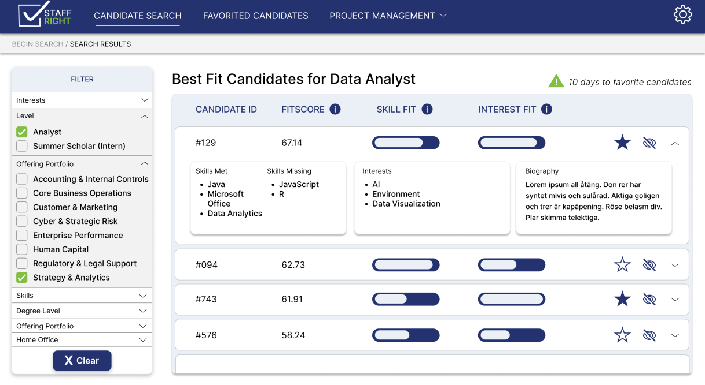

Challenge
StaffRight, Deloitte's recently developed team placement application,
was implemented in order to match new hires to their best-fit project
while reducing implicit bias. However, the current system is difficult
to navigate due to overwhelming amounts of
irrelevant information and
fails to prioritize an individual's interests in the selection
process.

Solution
My team's redesign aimed to streamline the design, showing the
information that matters most for project fit, while also highlighting
a candidate's interest and skill matches to ensure hiring managers are
truly selecting the best candidate for a position.

Workflow Definition and Navigation
One of the main flaws of the original system was the navigation.
Understanding where to find essential information was nearly
impossible, and understanding the “selection” of a candidate was also
incredibly confusing. My team modified the navigation and the workflow
to ensure users can easily locate the page they need and allow hiring
managers and the candidate to pick their best fit.


Restructuring Data
The original display of the “Best Fit Candidates” page primarily
contained information nonessential to the hiring process, most notably
the numerous columns that reiterated the entry level of the candidate
in different phrasing. In order to correct this, my redesign
prioritizes the key hiring criteria: skills, interests, and each of
their fit to the project. I also kept the previously used FitScore for
experienced users, and added an info button for newer users to learn
about the variable.